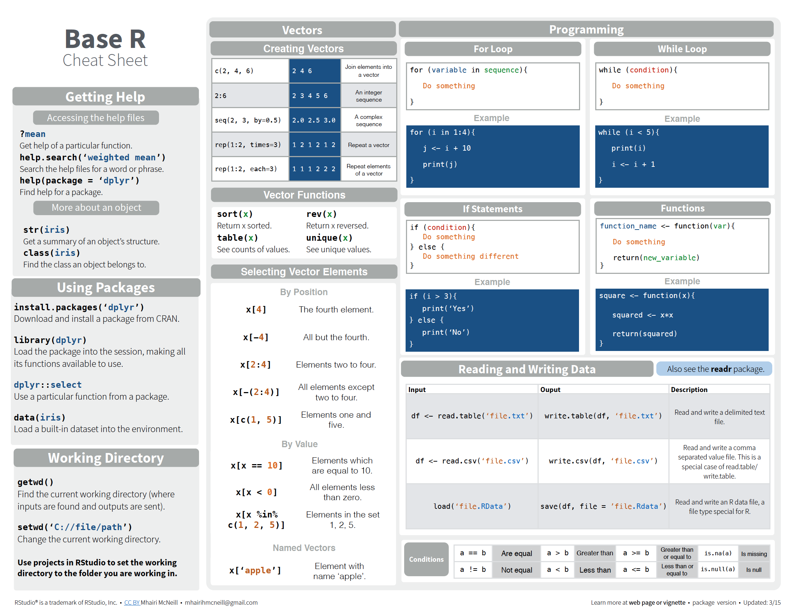
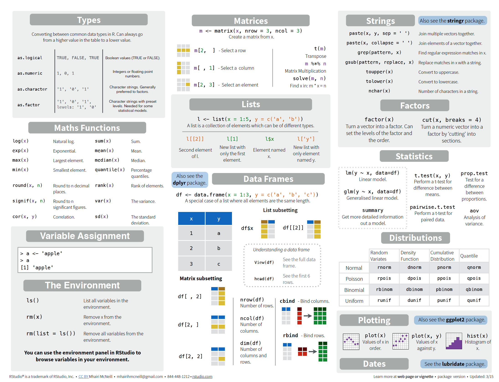

In this tutorial, you’ll get an overview of the basic programming concepts in R and main data types. It’s just enough to get you up and running essential R code. However, for true “beginners”, we highly recommend going through Advanced R - Chapter ‘Foundations’ from which the content of this assignment is (mostly) inspired by.
To follow the tutorial, you can start R Studio and execute statements from the code chunks in the R Console.
R uses different libraries or packages to load specific functions (read excel files, talk to Twitter, generate plots).
# To install package from the console, note the quotation marks!
# install.packages("name_of_package")
# load package in environment
library(mgcv) As a starting point you can install a package that we’ll extensively use throughout the semester:
tidyverseIn R, we assign values (numbers, characters, data frames) to objects (vectors, matrices, variables).
To do so, we use the <- operator:
# name_of_object <- value
an_object <- 2
another_object <- "some string"
# inspect object's value
an_object
#> [1] 2
print(another_object)
#> [1] "some string"R’s base data structures can be organised by their dimensionality (1d, 2d, or nd) and whether they’re homogeneous (all contents must be of the same type) or heterogeneous (the contents can be of different types).
| Homogeneous | Heterogeneous | |
|---|---|---|
| 1d | Atomic vector | List |
| 2d | Matrix | Data frame |
| nd | Array |
The basic data structure in R is the vector. Vectors can be of two kinds: atomic vectors and lists. They have three common properties:
typeof(), what it is.length(), how many elements it contains.attributes(), additional arbitrary metadata.However, atomic vectors and lists differ in the types of their elements: all elements of an atomic vector must be the same type, whereas the elements of a list can have different types.
There are four common types of atomic vectors:
Atomic vectors are usually created with c(), short for combine:
dbl_var <- c(1, 2.5, 4.5)
# with the L suffix, you get an integer rather than a double
int_var <- c(1L, 6L, 10L)
# use TRUE and FALSE (or T and F) to create logical vectors
log_var <- c(TRUE, FALSE, T, F)
chr_var <- c("these are", "some strings")
int_var <- c(1L, 6L, 10L)
typeof(int_var)
#> [1] "integer"
is.integer(int_var)
#> [1] TRUEList objects can hold elements of any type, including lists. You construct lists by using list() instead of c():
x <- list(1:3, "a", c(TRUE, FALSE, TRUE), c(2.3, 5.9))
str(x)
#> List of 4
#> $ : int [1:3] 1 2 3
#> $ : chr "a"
#> $ : logi [1:3] TRUE FALSE TRUE
#> $ : num [1:2] 2.3 5.9All objects can have arbitrary additional attributes, used to store metadata about the object. Attributes can be thought of as a named list (with unique names). They can be accessed individually with attr() or all at once (as a list) with attributes().
y <- 1:10
attr(y, "my_attribute") <- "This is a vector"
# inspect the attribute of y
attr(y, "my_attribute")
#> [1] "This is a vector"Adding a dim attribute to an atomic vector allows it to behave like a multi-dimensional array. A special case of the array is the matrix, which has two dimensions.
Matrices and arrays are created with matrix() and array(), or by using the assignment form of dim():
# two scalar arguments to specify rows and columns
a <- matrix(1:6, ncol = 3, nrow = 2)
# one vector argument to describe all dimensions
b <- array(1:12, c(2, 3, 2))
# you can also modify an object in place by setting dim()
c <- 1:6
dim(c) <- c(3, 2)
c
#> [,1] [,2]
#> [1,] 1 4
#> [2,] 2 5
#> [3,] 3 6length() and names() have high-dimensional generalisations:
length() generalises to nrow() and ncol() for matrices, and dim() for arrays.
names() generalises to rownames() and colnames() for matrices, and dimnames(), a list of character vectors, for arrays.
c() generalises to cbind() and rbind() for matrices, and to abind() (provided by the abind package) for arrays. You can transpose a matrix with t(); the generalised equivalent for arrays is aperm().
You can test if an object is a matrix or array using is.matrix() and is.array(), or by looking at the length of the dim(). as.matrix() and as.array() make it easy to turn an existing vector into a matrix or array.
A data frame is the most common way of storing data in R, and if used systematically makes data analysis easier. Under the hood, a data frame is a list of equal-length vectors. This makes it a 2-dimensional structure, so it shares properties of both the matrix and the list. This means that a data frame has names(), colnames(), and rownames(), although names() and colnames() are the same thing. The length() of a data frame is the length of the underlying list and so is the same as ncol(); nrow() gives the number of rows.
df <- data.frame(x = 1:3, y = c("a", "b", "c"))
str(df)
#> 'data.frame': 3 obs. of 2 variables:
#> $ x: int 1 2 3
#> $ y: chr "a" "b" "c"You can combine data frames using cbind() and rbind():
cbind(df, data.frame(z = 3:1))
#> x y z
#> 1 1 a 3
#> 2 2 b 2
#> 3 3 c 1Let’s explore the different types of subsetting with a simple vector, x.
x <- c(2, 4, 3, 5)Positive integers return elements at the specified positions:
x[c(3, 1)]
#> [1] 3 2Duplicated indices yield duplicated values:
x[c(1, 1)]
#> [1] 2 2Real numbers are silently truncated to integers:
x[c(2, 9)]
#> [1] 4 NANegative integers omit elements at the specified positions:
x[-c(3, 1)]
#> [1] 4 5You can’t mix positive and negative integers in a single subset: x[c(-1, 2)] is not allowed.
Logical vectors select elements where the corresponding logical value is TRUE. This is probably the most useful type of subsetting because you write the expression that creates the logical vector:
x[c(TRUE, TRUE, FALSE, FALSE)]
#> [1] 2 4
x[x > 3]
#> [1] 4 5A missing value in the index always yields a missing value in the output:
x[c(TRUE, TRUE, NA, FALSE)]
#> [1] 2 4 NANothing returns the original vector. This is not useful for vectors but is very useful for matrices, data frames, and arrays. It can also be useful in conjunction with assignment.
x[]
#> [1] 2 4 3 5Zero returns a zero-length vector. This is not something you usually do on purpose, but it can be helpful for generating test data.
x[0]
#> numeric(0)If the vector is named, you can also use character vectors to return elements with matching names:
(y <- setNames(x, letters[1:4]))
#> a b c d
#> 2 4 3 5
y[c("d", "c", "a")]
#> d c a
#> 5 3 2Like integer indices, you can repeat indices:
y[c("a", "a", "a")]
#> a a a
#> 2 2 2When subsetting with [ names are always matched exactly
z <- c(abc = 1, def = 2)
z[c("a", "d")]
#> <NA> <NA>
#> NA NASubsetting a list works in the same way as subsetting an atomic vector. Using [ will always return a list;
[[ and $, as described below, let you pull out the components of the list.
You can subset higher-dimensional structures in three ways:
a <- matrix(1:9, nrow = 3)
colnames(a) <- c("A", "B", "C")
# multiple vectors
a[1:2, ]
#> A B C
#> [1,] 1 4 7
#> [2,] 2 5 8
df <- data.frame(x = 1:3, y = 3:1, z = letters[1:3])
# selecting by value of certain vector
df[df$x == 2, ]
#> x y z
#> 2 2 2 bThe following checklist makes it easier to import data correctly into R:
?, $,%, ^, &, *, (, ),-,#, ?,,,<,>, /, |, \, [ ,] ,{, and };library(readr)
# import data from .txt file
df <- read_table(
"https://s3.amazonaws.com/assets.datacamp.com/blog_assets/test.txt",
col_names = FALSE)
df
#> # A tibble: 5 x 3
#> X1 X2 X3
#> <dbl> <dbl> <chr>
#> 1 1 6 a
#> 2 2 7 b
#> 3 3 8 c
#> 4 4 9 d
#> 5 5 10 e
# import data from .csv file
df <- read.table(
"https://s3.amazonaws.com/assets.datacamp.com/blog_assets/test.csv",
header = TRUE,
sep = ",")Standard format for defining a function in R:
my_function_name <- function(arg1 = "default", arg2 = "default") {
# 'cat' is used for concatenating strings
merged_string <- cat(arg1, arg2)
# if not specified, last evaluated object is returned
return(merged_string)
}
# call a function elsewhere from code
arg1 <- "Hello"
arg2 <- "World!"
a_greeting <- my_function_name(arg1, arg2)
#> Hello World!
print(a_greeting)
#> NULLCRAN - the curated repository of R packages provides millions of functions that you could use to tackle data. You simply need to install a package, and then call the function from your R code function_name(somearguments). For example, the package stats helps you in fitting linear models through the function lm():
library(stats)
x <- rnorm(500)
y <- x*4 + rnorm(500)
lm.fit <- lm(y~x, data = data.frame(x, y))
print(lm.fit)
#>
#> Call:
#> lm(formula = y ~ x, data = data.frame(x, y))
#>
#> Coefficients:
#> (Intercept) x
#> 0.002114 3.941450How many functions have been used in the example? What does rnorm mean? You can get informed about any R function by using its documentation ?function_name or ?packageName::function_name.


Try to figure out the answers without executing the code. Check your answers in R Studio.
Given the vector: x <- c("ww", "ee", "ff", "uu", "kk"), what will be the output for x[c(2,3)] ?
Let a <- c(2, 4, 6, 8) and b <- c(TRUE, FALSE, TRUE, FALSE), what will be the output for the R expression max(a[b])?
Is it possible to apply the function my_function_name using x and a as arguments?
Consider a vector x such that:
x <- c(1, 3, 4, 7, 11, 18, 29)
Write an R statement that will return a list X2 with components of value:
x*2, x/2, sqrt(x) and names ‘x*2’, ‘x/2’, ‘sqrt(x)’.
Read the file Table0.txt into an object DS.